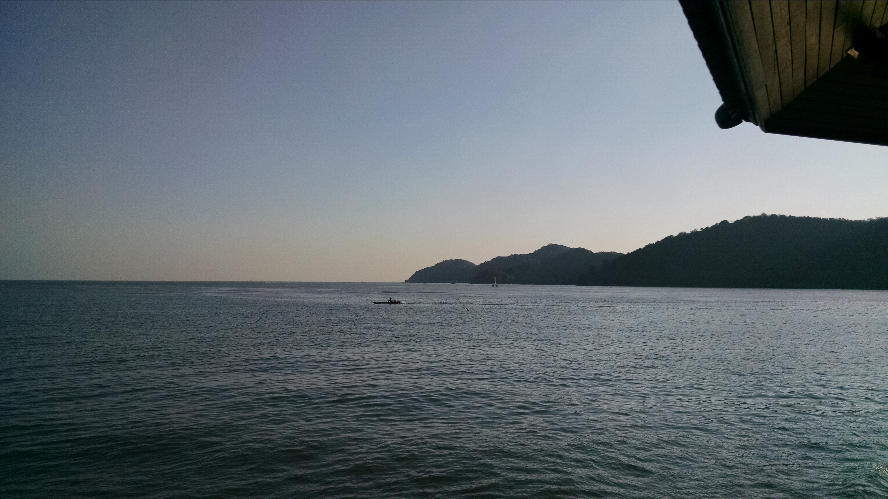

Welcome to Tee's Page!
My name is Tee and I'm a student at Kettering University. I was born and grew up in Ann Arbor, MI, and graduated high school in 2014. I went to Milwakuee School of Engineering (MSOE), majoring in Mechanical Engineering. After one year there, I found out that software is much more my thing than hardware. I transferred here and switched my major to Computer Science, which is where I am since!
Please look around this page. It will give you a bit of information about me. The below links point to each section of this page. Hope you enjoy!
Professional Stuff
Co-op
Since I'm a transfer student with >40 credits, I only need 4 work terms to graduate. I worked all 4 terms at Bosch, with my first term being a tester in their Car Multimedia department and the other three terms as a software engineering intern in their Chassis Systems Control department. I really enjoyed my time there, but now I'm working towards my thesis full time during my next 2 work terms.
Classes
I've taken the following CS classes:
- CS 101 with Dr. Vineyard
- CS 102 with Dr. Turini
- CS 211 with Dr. Geske
- CS 203 with Dr. Wang
This term, I'm taking 5 classes:
- CE 320 with Dr. Tewolde
- CS 202 with Dr. Wang
- CS 341 with Dr. Stanchev
- CS 435 with Dr. Kanchi
- ECON 350 with Prof. Okraku
Thesis
I'm working on a thesis called "Diagnostic Assistance Software for Mental Health Professionals." It's an entrepreneural thesis, and I'm planning on finishing it Spring 2018.
My Interests
Here are some of my interests!
| Hobby | How Long | Description |
|---|---|---|
| Swimming | 16 years | I love swimming! It's the first sport I learned. I was in swim team for 3 years and made state team once. I still swim here and there |
| Violin | 9 years | I started violin in January 2008, and while it's hard it's very rewarding. I've been concertmaster of GTIYO, a youth orchestra, and travelled to play in Spain. |
| Ice Skating | 5 years (on and off) | Ice skating is hard for me, but it is also fun. I'm by no means good, but I do enjoy it. I can do up to Freestyle 3, just shy of a loop jump. |
| Knitting | 17 years | My mom taught me how to knit at 3 years old. I can do a lot with knitting: cables, lace, etc. My favorite projects are hats. |
Pictures
I'm not much of a picture taker, buth here are two pictures!

I took this picture during our family trip to Koh Chang in Thailand in December 2015. It's right before sunset, but after walking for 45 minutes
unfortunately the sun was hiding behind the clouds when we arrived :(
Koh Chang is part of a group of islands off the east coast of Thailand.
It is near the Cambodian border, and during the 60s and 70s many refugees escaped through this route.
We left from Bangkok, stayed in a hotel in Chantaburi, and stopped by a waterfall called "Namtok Phlio." It's part of a national park and there weren't many people when we went. Overall a very fun trip!
Learn a little Thai!
I'm Thai-American, born and raised in Ann Arbor. I grew up speaking Thai only at home until I went to school. Here are some Thai words you can learn!- Hew (หิว)
- Hungry. The -ew sound is short
- Hnang Suu (หนังสือ)
- Book. Hnang has a high sound, suu has a high and throaty sound.
- Rien (เรียน)
- Learn. Pronounced ree-en. The tone is even.
Contact Me
Here is my contact information: Email: chua0563@kettering.eduPhone: (123)-456-7890
Home Address:
1234 Shady Street
Ann Arbor, MI 48108